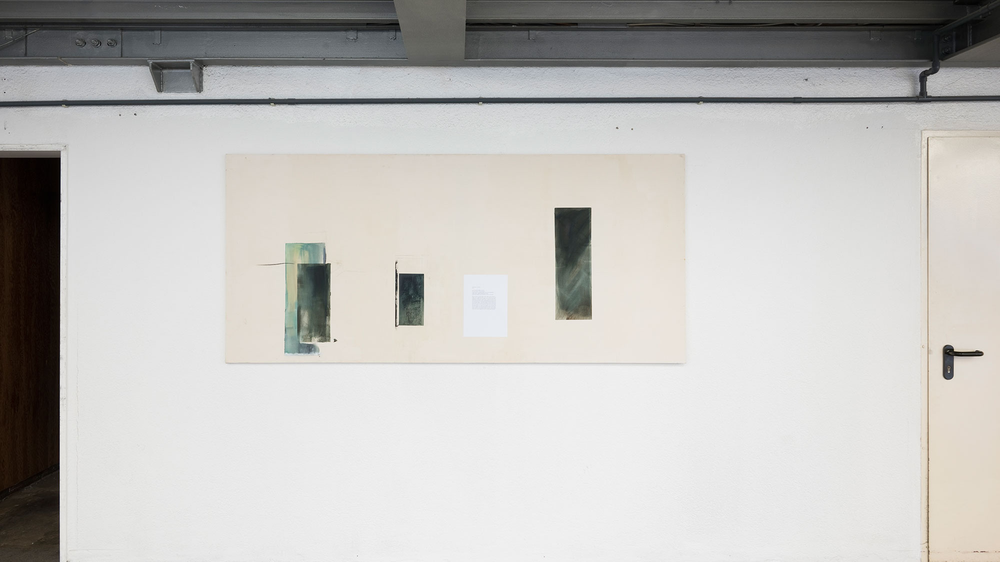
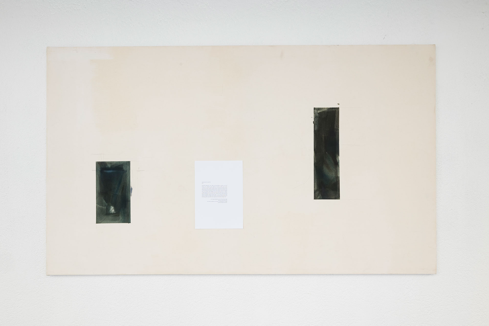
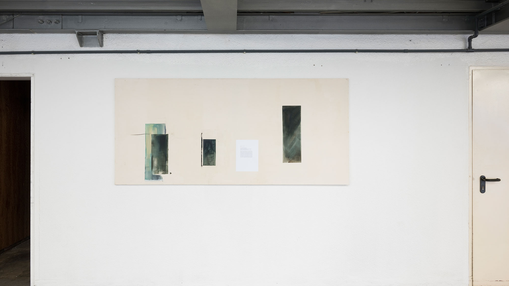
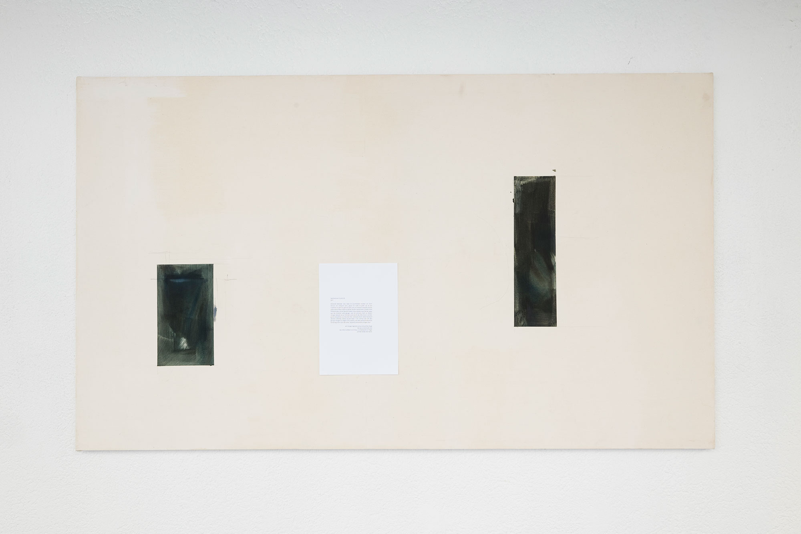

hochsommer 5 uhr früh
teil I
bleibend lebender rest, liebe ist (summende mücken um mich herum, ein schwarm vllt.),
glaub ich nicht so groß. sie ist ein tröpfchen es perlt es perlt es perlt,
bin im schwarm erwacht und als papa mama diese mallorca-perlen kaufte mama leise in hohle hand flüsterte dass sie die
hässlich findet und so weiter soso hat der papa aus der hinteren ecke gesagt, und ich erinnere mich an diesen
morgen damals da wir mit dem auto durch die côte-d‘azur und der ganze schweiß an uns herunter fiel: schmuck-stück:
meine hand auf deinem schenkel, dieses azuren-meer = ein schmus (ich will den ganzen morgen nur liegen und zusehen,
wie alles perlend erleuchtet wird) frag nicht nach der liebe, tausend summende schlager jetzt
am morgen legt die sonne sich auf die dinge
die da so vereinzelt sind
das linke stuhlbein vorm haus, im blattwerk ein flügel
auf der klinke eine hand.
hochsommer 5 uhr früh
teil II>/i>
tür im treppenhaus fällt ins schloss fiel in der nacht 1-2 mal aus träumen schloss es wär neue tag dann legte ich mich zusammengefaltet wieder nieder, in gegenüberliegenden häusern öffnen und schließen leute ihre fenster: schlaf=zu | wach=auf. öffne die fotos auf dem handy: drücke finger lang auf display b. beginnt sich zu regen this play verzerrt mich: damals da sich seine wirbelsäule an diesen stein schmiegte und seine beine angewinkelt, aufgeklappt eher gespreizt. dieses perlen | glänzen des wassers, als meine zunge durch seine achsel – algenbehaarte steine bedacht dass wir nicht ausrutschen, z.b. die wellen, die dem bachlauf entflohen und sich an steinen stießen – alles war ein fließen im schwarz-wald: diese spritzen der sonne sie fielen auf eichen buchen ahorn, vllt. ist liebe auch ein schanier, d.h. ein wort für ein sich um die eine achse drehendes gelenk, zum öffnen und schließen wann wir wollen von türen z.b. gingen wir dann über die steine, mit mühen nicht zu fallen, später spucktest du unentwegt auf deinen schwanz: in deiner shorts hatten sich ameisen eingenistet, die jetzt ununterbrochen pinkelten